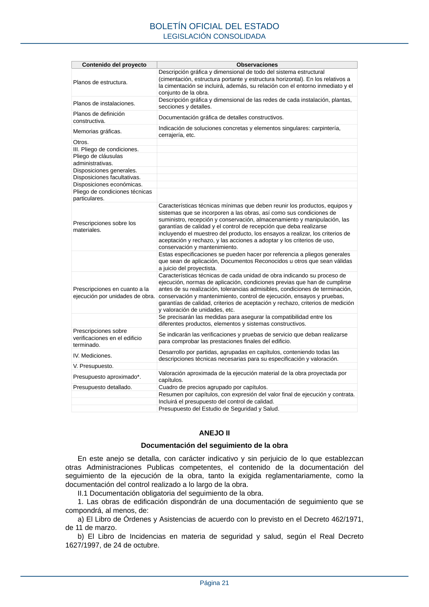

Real Decreto 314/2006: aprobación y Parte I del CTE · edición 2022-06-15 · capa oficial
Documento RD-314-2006-oficial · SHA-256 del PDF 298090e145f5558aceae49702b2ce132fe8fe8671bd87d650217c6a24bdd65ba
Página física 21 de 26.
Copia fiel del PDF fuente · Fuente oficial
Texto extraído y reorganizado: Basado en datos de la Agencia Estatal Boletín Oficial del Estado. PDF reproducido: Fuente de los datos: Agencia Estatal Boletín Oficial del Estado.
Formato: Texto de la página (Markdown)
Contenido del proyecto Observaciones Planos de estructura. Descripción gráfica y dimensional de todo del sistema estructural (cimentación, estructura portante y estructura horizontal). En los relativos a la cimentación se incluirá, además, su relación con el entorno inmediato y el conjunto de la obra. Planos de instalaciones. Descripción gráfica y dimensional de las redes de cada instalación, plantas, secciones y detalles. Planos de definición constructiva. Documentación gráfica de detalles constructivos. Memorias gráficas. Indicación de soluciones concretas y elementos singulares: carpintería, cerrajería, etc. Otros. III. Pliego de condiciones. Pliego de cláusulas administrativas. Disposiciones generales. Disposiciones facultativas. Disposiciones económicas. Pliego de condiciones técnicas particulares. Prescripciones sobre los materiales. Características técnicas mínimas que deben reunir los productos, equipos y sistemas que se incorporen a las obras, así como sus condiciones de suministro, recepción y conservación, almacenamiento y manipulación, las garantías de calidad y el control de recepción que deba realizarse incluyendo el muestreo del producto, los ensayos a realizar, los criterios de aceptación y rechazo, y las acciones a adoptar y los criterios de uso, conservación y mantenimiento. Estas especificaciones se pueden hacer por referencia a pliegos generales que sean de aplicación, Documentos Reconocidos u otros que sean válidas a juicio del proyectista. Prescripciones en cuanto a la ejecución por unidades de obra. Características técnicas de cada unidad de obra indicando su proceso de ejecución, normas de aplicación, condiciones previas que han de cumplirse antes de su realización, tolerancias admisibles, condiciones de terminación, conservación y mantenimiento, control de ejecución, ensayos y pruebas, garantías de calidad, criterios de aceptación y rechazo, criterios de medición y valoración de unidades, etc. Se precisarán las medidas para asegurar la compatibilidad entre los diferentes productos, elementos y sistemas constructivos. Prescripciones sobre verificaciones en el edificio terminado. Se indicarán las verificaciones y pruebas de servicio que deban realizarse para comprobar las prestaciones finales del edificio. IV. Mediciones. Desarrollo por partidas, agrupadas en capítulos, conteniendo todas las descripciones técnicas necesarias para su especificación y valoración. V. Presupuesto. Presupuesto aproximado*. Valoración aproximada de la ejecución material de la obra proyectada por capítulos. Presupuesto detallado. Cuadro de precios agrupado por capítulos. Resumen por capítulos, con expresión del valor final de ejecución y contrata. Incluirá el presupuesto del control de calidad. Presupuesto del Estudio de Seguridad y Salud. ANEJO II Documentación del seguimiento de la obra En este anejo se detalla, con carácter indicativo y sin perjuicio de lo que establezcan otras Administraciones Publicas competentes, el contenido de la documentación del seguimiento de la ejecución de la obra, tanto la exigida reglamentariamente, como la documentación del control realizado a lo largo de la obra. II.1 Documentación obligatoria del seguimiento de la obra. 1. Las obras de edificación dispondrán de una documentación de seguimiento que se compondrá, al menos, de: a) El Libro de Órdenes y Asistencias de acuerdo con lo previsto en el Decreto 462/1971, de 11 de marzo. b) El Libro de Incidencias en materia de seguridad y salud, según el Real Decreto 1627/1997, de 24 de octubre. BOLETÍN OFICIAL DEL ESTADO LEGISLACIÓN CONSOLIDADA Página 21

Datos candidatos: compruebe celdas y notas en el PDF.